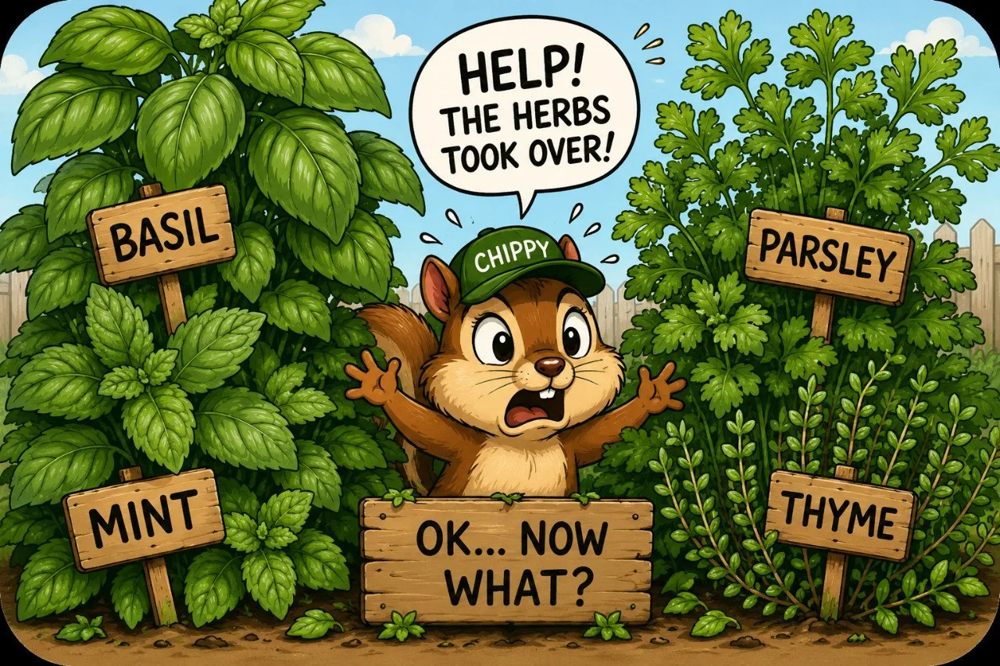

Food & Outdoor Living
Waiting 2 Weeks to Get Back to the Cabin SUCKS
The dog days of summer, a few little projects, and a deck we could not get enough of.
Read the story ↗The deck, the growing things, the harvest that got away, and useful herbs beyond the garden.
The dog days of summer, a few little projects, and a deck we could not get enough of.
Read the story ↗
A little shade, some deck time, and the slower part of the story.
Read the story ↗
The vines were full, the crop looked beautiful, and then we were gone two weeks too long.
Read the story ↗
Existing QBL illustrationYou wanted a few useful herbs. Now the basil is taking over, the mint is acting wild, and the parsley suddenly has bigger plans than you do. Good. Let’s not waste the fun part.
Read the story ↗
If you only have a little room, drying herbs is one of the easiest ways to stretch the value of what you grow. The best herbs for drying keep good flavor, store well, and still feel useful months later instead of turning into dusty decoration.
Read the story ↗ Existing QBL illustration
Existing QBL illustrationA practical backyard guide to growing more basil than you know what to do with.
Read the story ↗